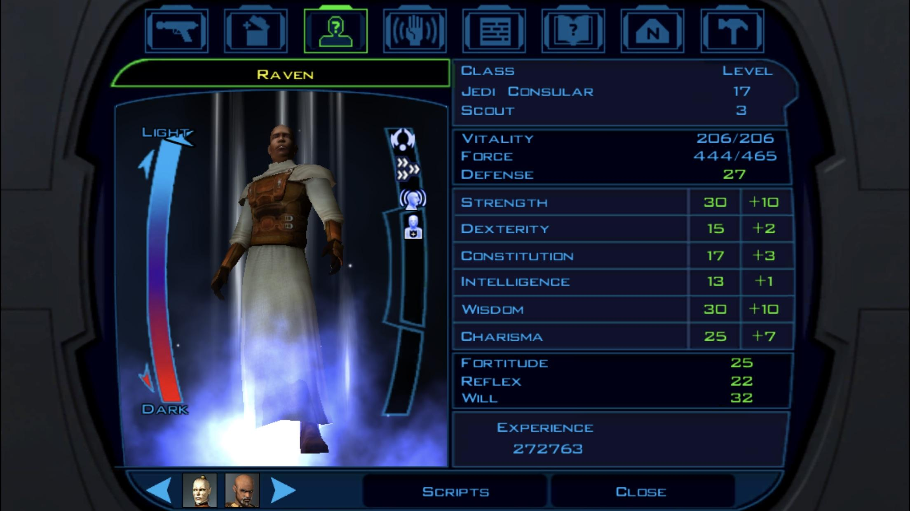

Character Creation
First you will be asked to create your character. You can choose between three classes: Soldier, Scout and Scoundrel.
Each class has its own advantages and disadvantages.
The SOLDIER is the best class for combat but has the least amount of skill points.
The SCOUT is a good all-around class, but is not the best at anything.
The SCOUNDREL is the best class for skills, but is not the best at combat.
You will also be asked to choose your characters attributes. The attributes are Strength, Dexterity, Constitution, Intelligence, Wisdom and Charisma.
STRENGTH is the most important attribute for combat
DEXTERITY is the most important attribute for ranged combat
CONSTITUTION is the most important attribute for health
INTELLIGENCE is the most important attribute for skills
WISDOM is the most important attribute for force powers
CHARISMA is the most important attribute for dialogue
The character we will use in this Walkthrough will be a Scout which we will turn into a Jedi Sentinel later in the story.
Feats
Feats are special abilities that your character can use. You will be asked to choose one feat at the start of the game. The feat we will choose is the FLURRY feat. This feat allows you to attack three times in one turn.
Skills
Skills are used to perform certain actions in the game. You will be asked to choose two skills at the start of the game. The skills we will choose are TREAT INJURY and SECURITY.
Treat Injury is used to heal yourself and your party members.
Security is used to open locked doors and containers.